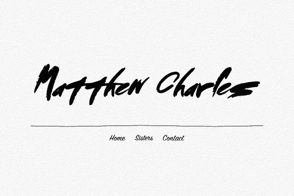
01 · Slicey Heallow referenceDry black · water 10%
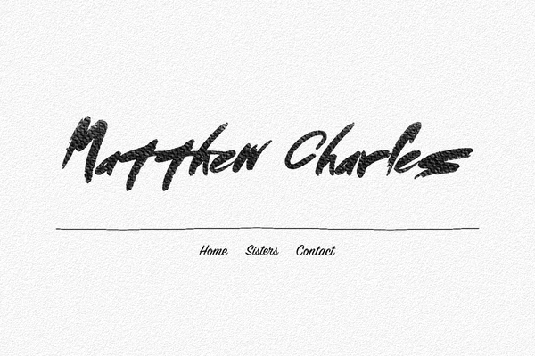
02 · Slicey Heallow referenceWet black · water 64%
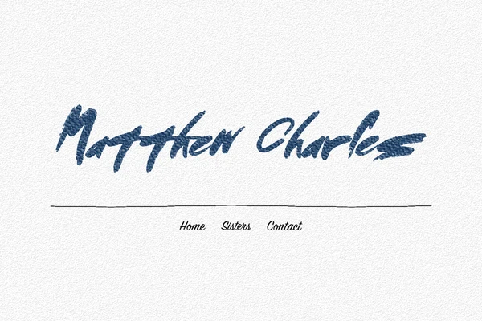
03 · Slicey Heallow referenceSingle-color wash · water 48%
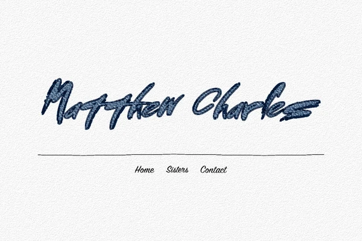
04 · Slicey Heallow referencePale wash + dark rim · water 74%
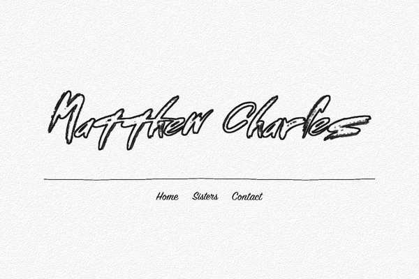
05 · Slicey Heallow referenceOpen outline · water 18%
06 · Gathenia referenceDry black · water 10%
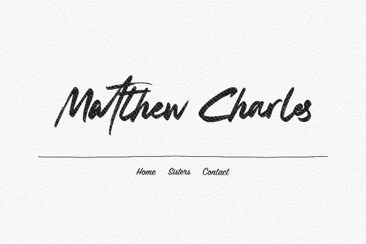
07 · Gathenia referenceWet black · water 64%
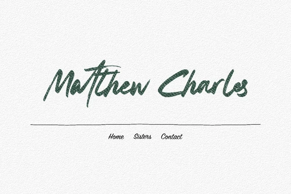
08 · Gathenia referenceSingle-color wash · water 48%
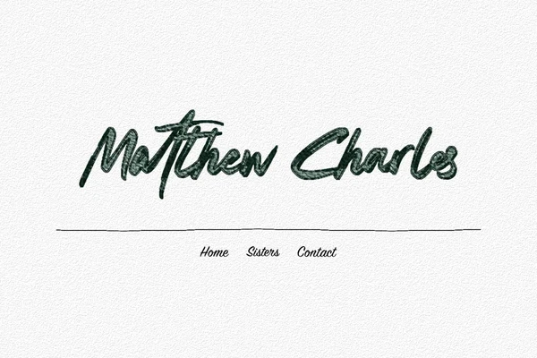
09 · Gathenia referencePale wash + dark rim · water 74%
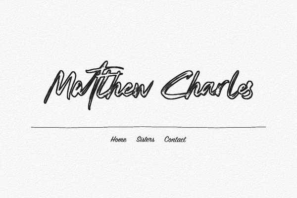
10 · Gathenia referenceOpen outline · water 18%
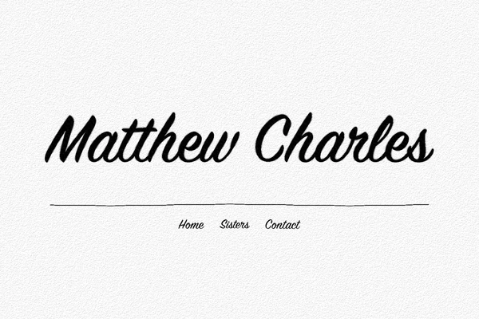
11 · SignPainterDry black · water 10%
12 · SignPainterWet black · water 64%
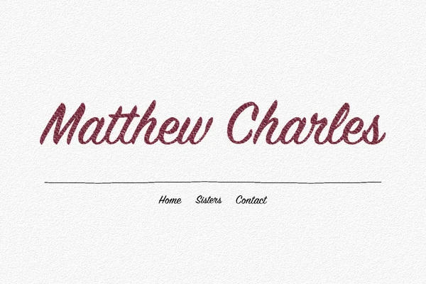
13 · SignPainterSingle-color wash · water 48%
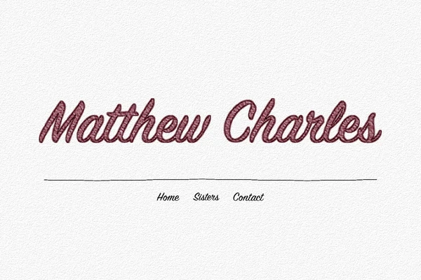
14 · SignPainterPale wash + dark rim · water 74%
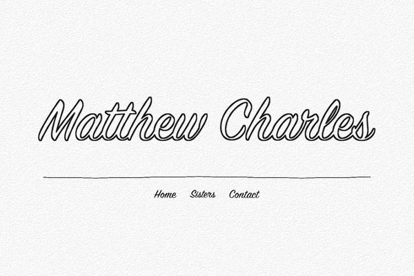
15 · SignPainterOpen outline · water 18%
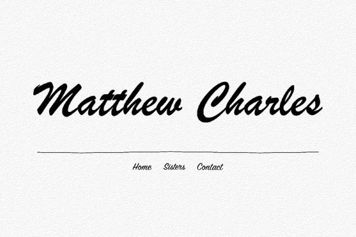
16 · Brush ScriptDry black · water 10%
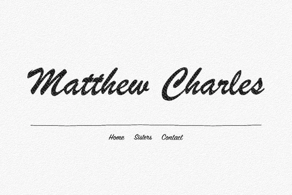
17 · Brush ScriptWet black · water 64%
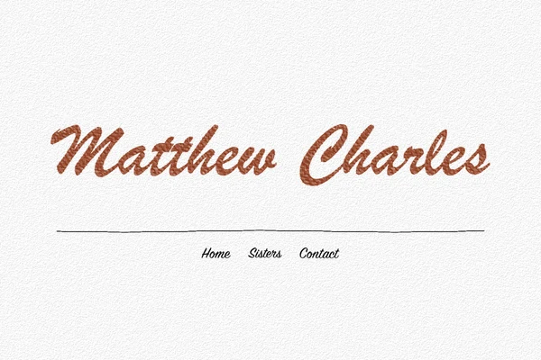
18 · Brush ScriptSingle-color wash · water 48%
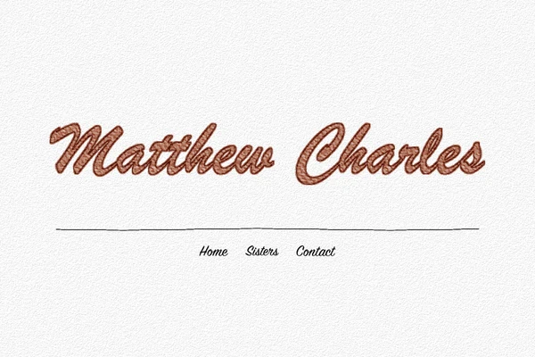
19 · Brush ScriptPale wash + dark rim · water 74%
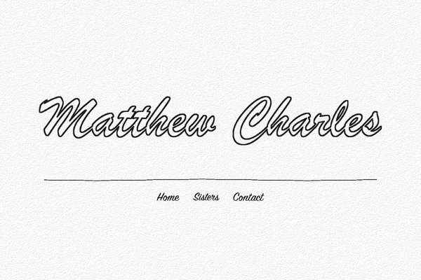
20 · Brush ScriptOpen outline · water 18%
21 · Marker FeltDry black · water 10%
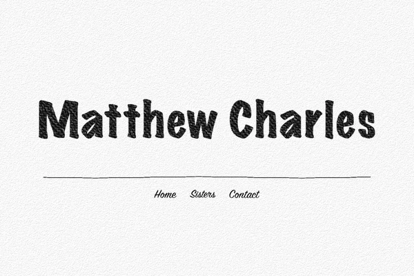
22 · Marker FeltWet black · water 64%
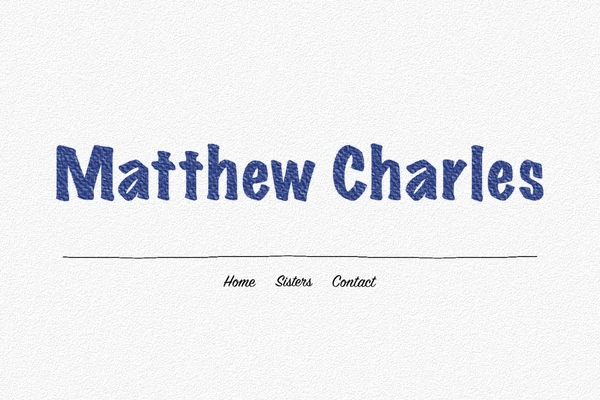
23 · Marker FeltSingle-color wash · water 48%
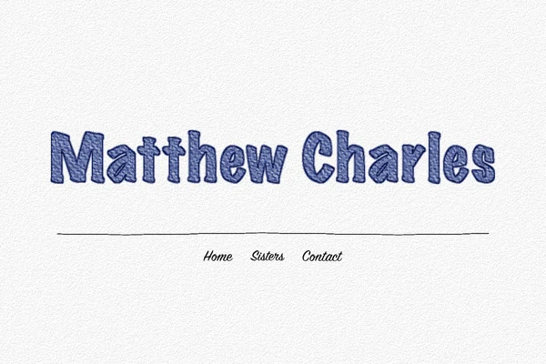
24 · Marker FeltPale wash + dark rim · water 74%
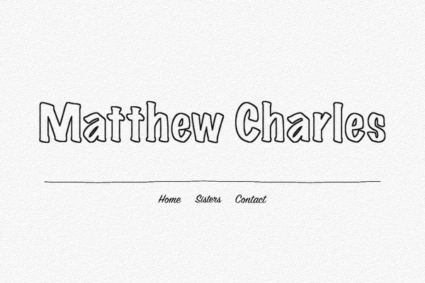
25 · Marker FeltOpen outline · water 18%
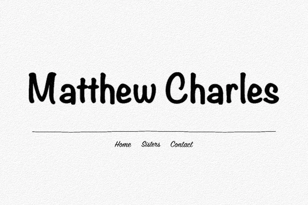
26 · NoteworthyDry black · water 10%
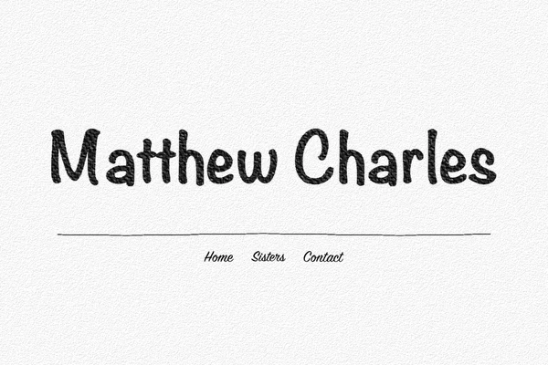
27 · NoteworthyWet black · water 64%
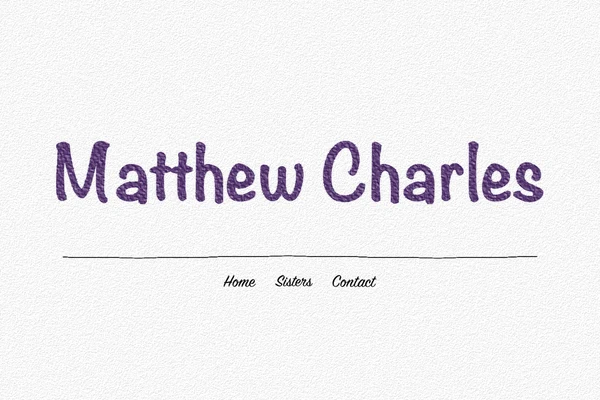
28 · NoteworthySingle-color wash · water 48%
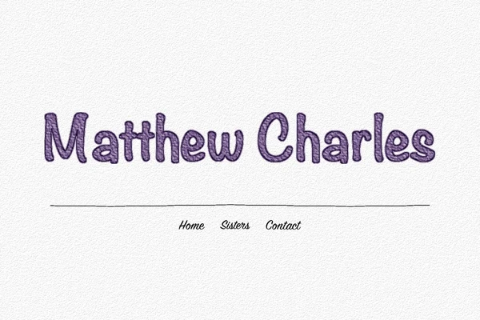
29 · NoteworthyPale wash + dark rim · water 74%
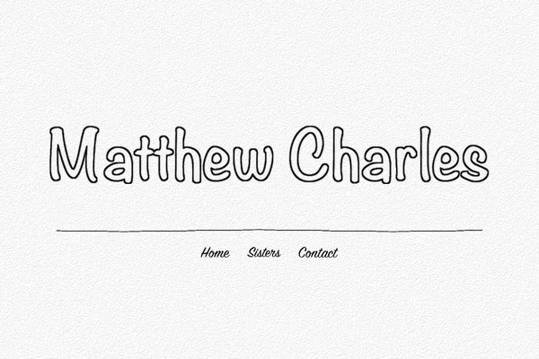
30 · NoteworthyOpen outline · water 18%